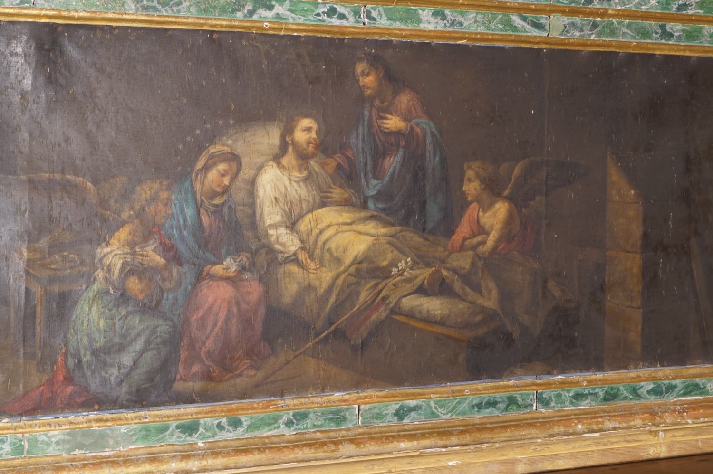

Aquesta pintura representa la mort de sant Josep, a qui identificam per la vara florida, un dels seus símbols més característics (vegeu la fitxa sobre l’escultura central del retaule). Hi apareix acompanyat en els seus darrers moments per la Verge Maria, Jesucrist i dos àngels que esperen la seva ànima per guiar-la cap al cel. La presència de petits objectes quotidians contribueix a donar a l’escena un caràcter íntim i familiar.
No sabem gaire cosa de la mort de sant Josep, però tradicionalment es creu que morí abans de l’episodi de les noces de Canà, ja que no hi va anar amb la seva família. Per això, la seva mort ha estat considerada tradicionalment la més dolça i serena possible, en companyia de Jesús i de la Verge Maria, motiu pel qual és venerat com a patró de la bona mort.